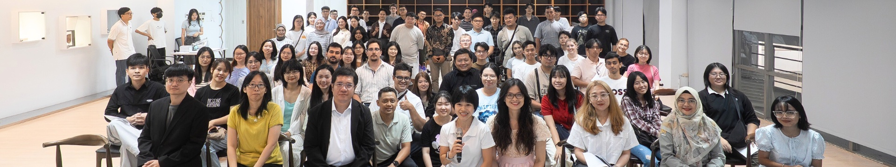

世界的夥伴
雲科大的足跡遍布全球 41 個國家，與超過 350 所 大學建立了姊妹校關係。 這意味著，在斗六唸書的學生，隨時都有機會飛往世界各地交換、實習， 將異國的文化養分帶回這片土地。
連結全球GLOBAL CONNECTION
這裡不只是雲林的雲科，也是世界的雲科。
我們搭建起通往全球的橋樑，讓在地的故事與國際的視野在這裡交會。
雲科大的足跡遍布全球 41 個國家，與超過 350 所 大學建立了姊妹校關係。 這意味著，在斗六唸書的學生，隨時都有機會飛往世界各地交換、實習， 將異國的文化養分帶回這片土地。
連結全球在瑞士日內瓦、德國紐倫堡、馬來西亞 ITEX 等國際發明展上， 經常能看到雲科大師生披著國旗領獎的身影。 他們用創意與技術證明，來自雲林的設計與發明，擁有改變世界的力量。
走在校園裡，你可能會聽到英語、日語、印尼語或越南語的交談聲。 來自世界各地的國際學生，讓雲科大成為一個多元文化共融的小地球村。 各種文化節慶與交流活動，豐富了這座城市的文化底蘊。